Spoki.
Cliente
Spoki
Settore
SaaS · WhatsApp Business
Ruolo
Art Direction · Visual Identity
Periodo
Gen 2024 · Mag 2026
Overview
Spoki aiuta le aziende a vendere, supportare e automatizzare le conversazioni con i clienti su WhatsApp, trasformando ogni chat in un'opportunità di business.
Sono entrato in azienda come Art Director per ricostruire da zero un sistema visivo che era piatto e poco riconoscibile. Negli ultimi due anni ho gestito tutto il visual: eventi live, stand fieristici, social, presentazioni, packaging dei regali per i clienti, ADV, post social e video in motion graphics.
L'obiettivo era costruire un'identità coerente che funzionasse in ogni touchpoint, dal banner di quattro metri al pixel di un post Instagram, senza perdere personalità.
ADV
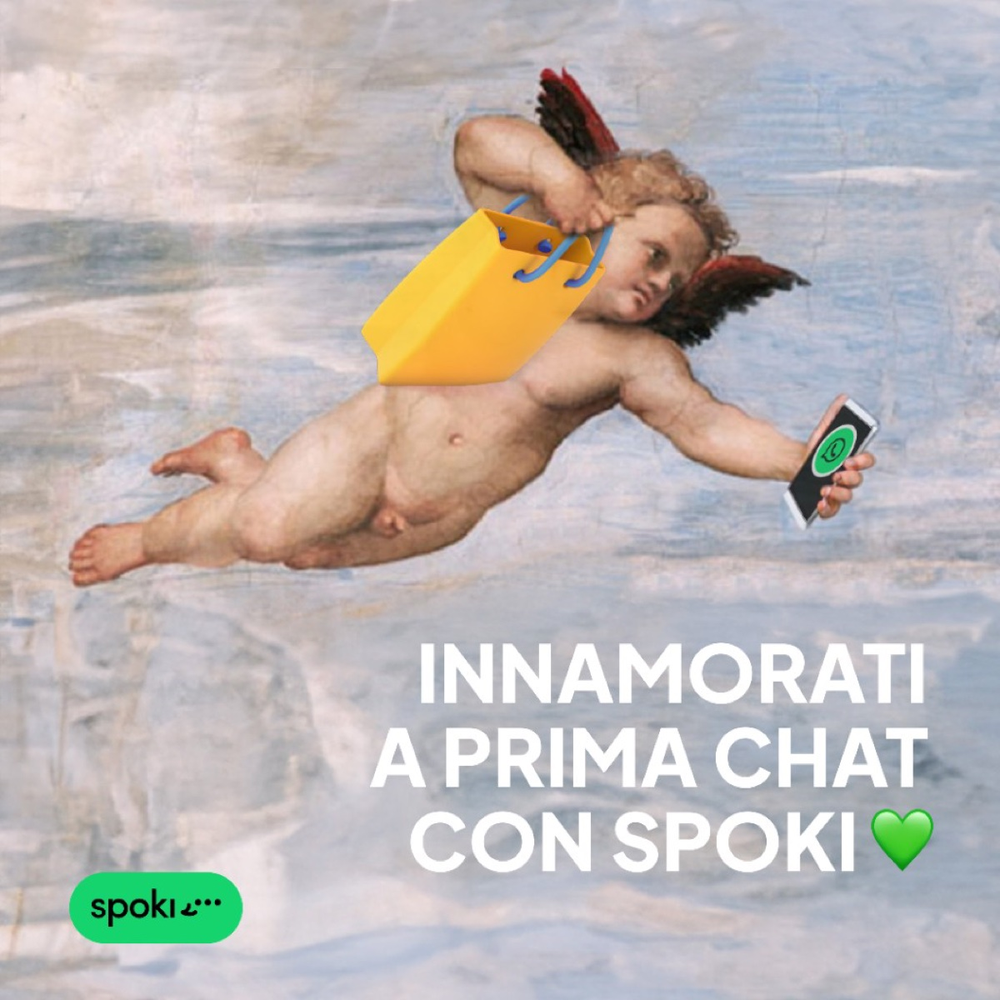
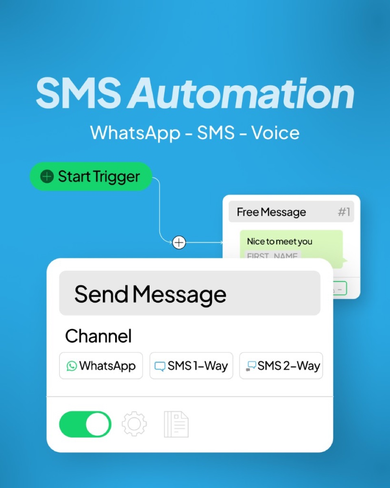
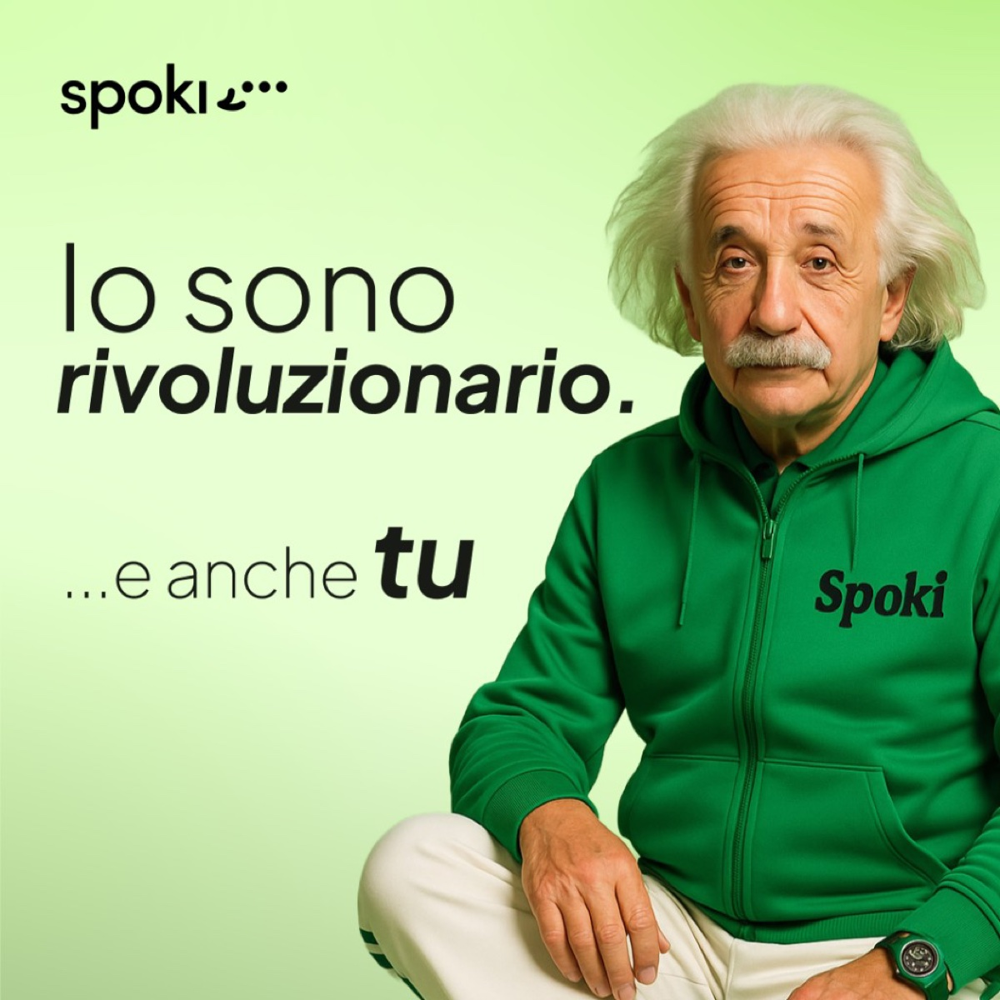
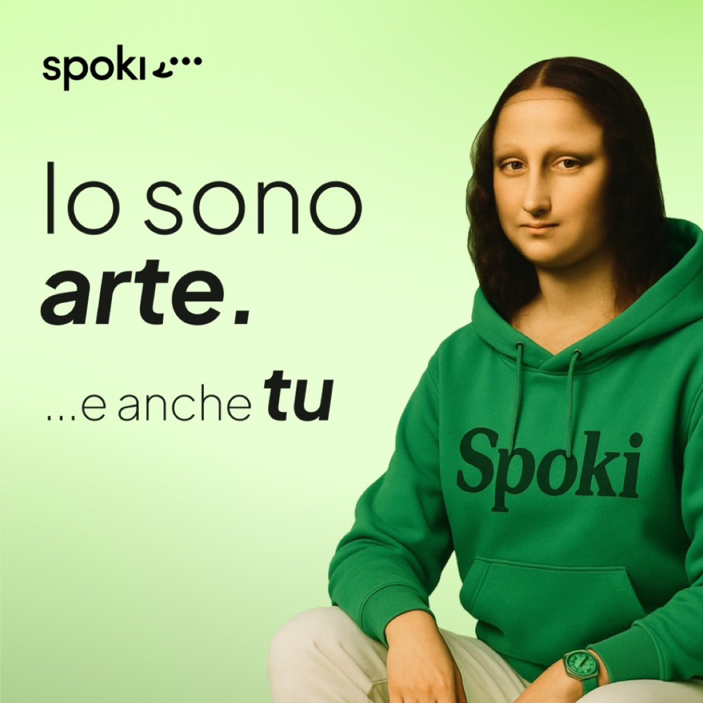
Campagna OOH
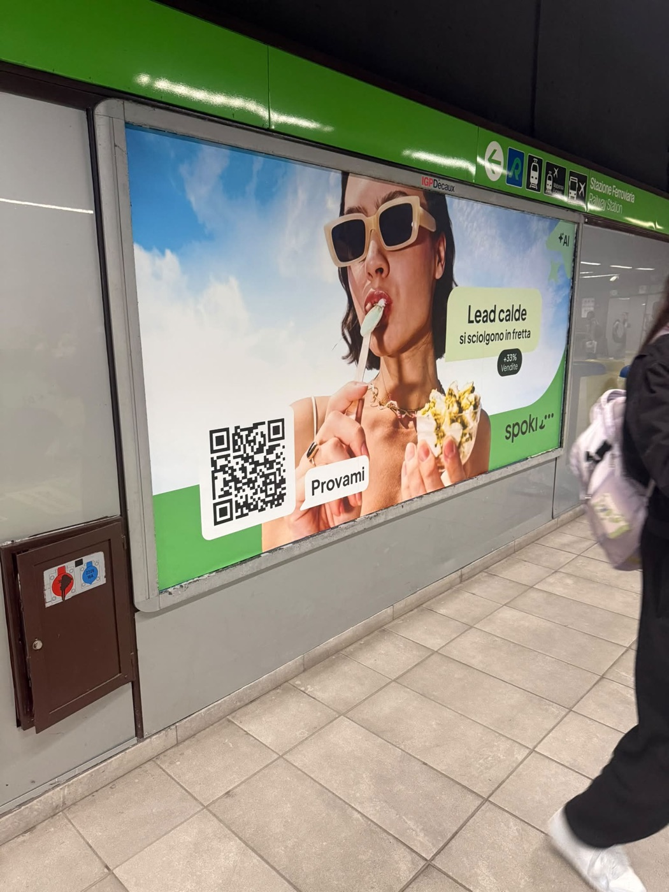
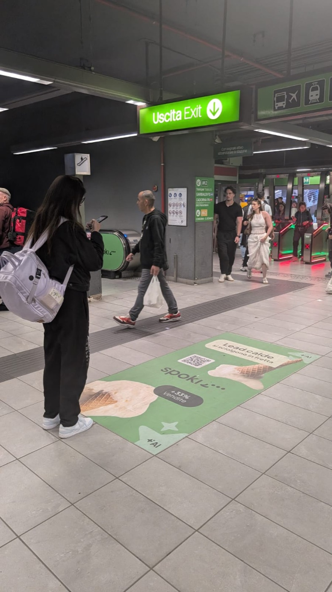
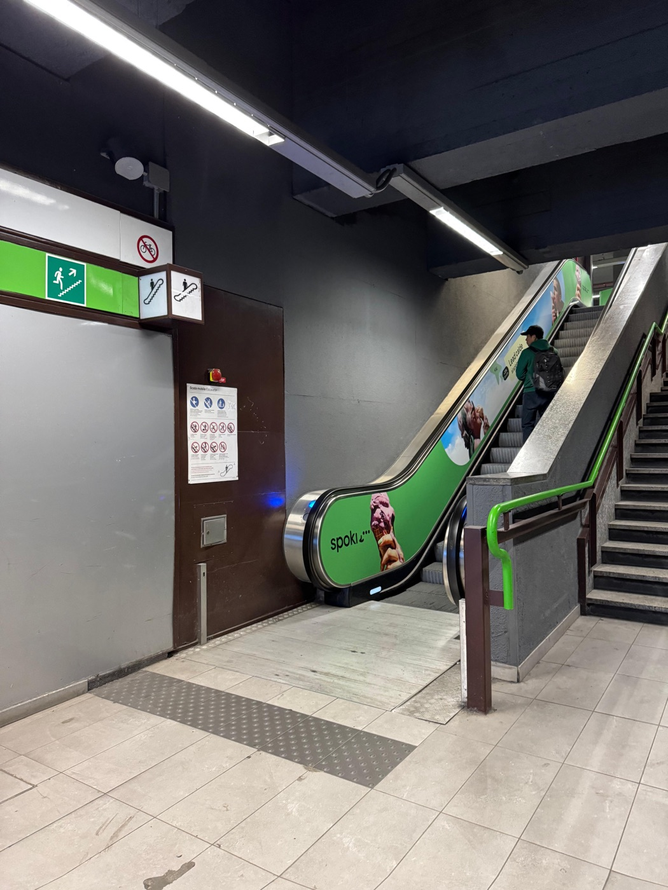
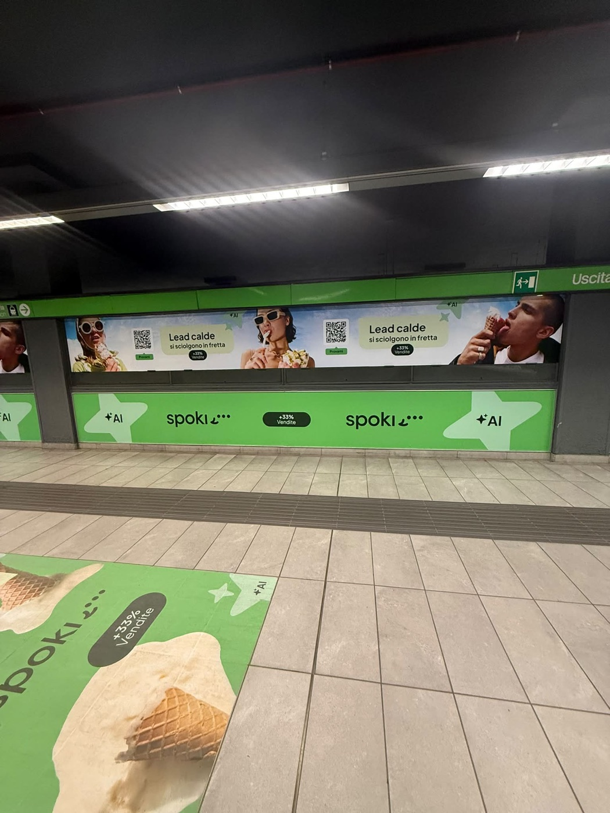
Motion graphics
Packaging · Pandorini di Natale
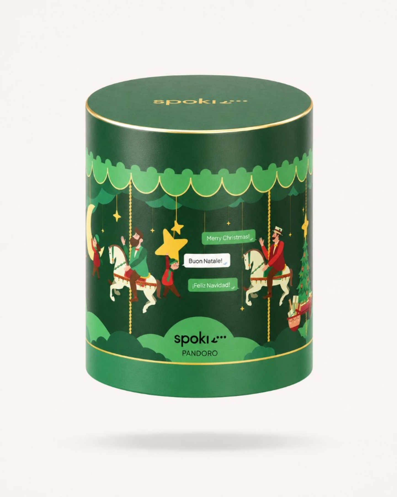
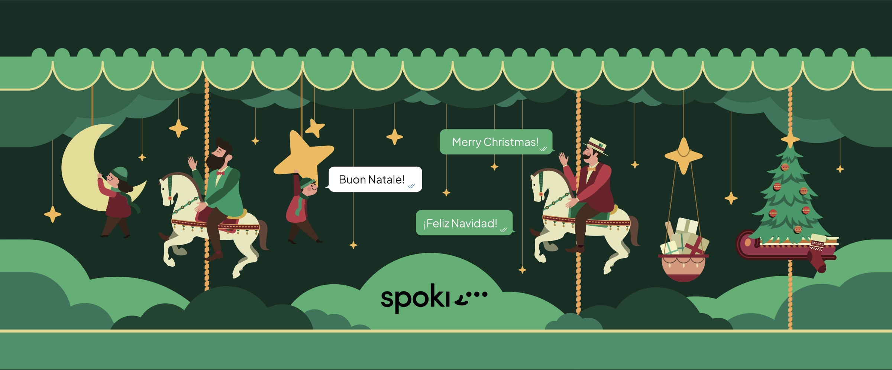
Stand fieristici
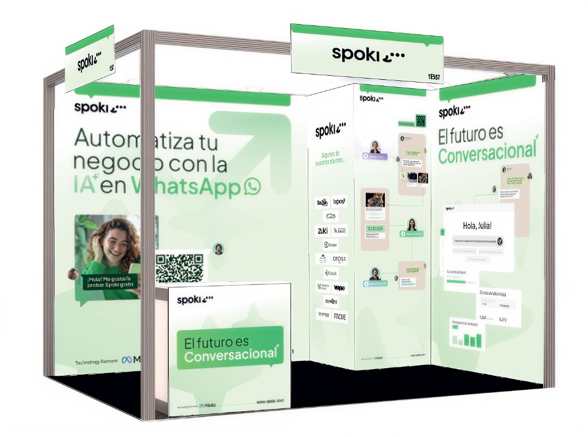
Spoki on the road
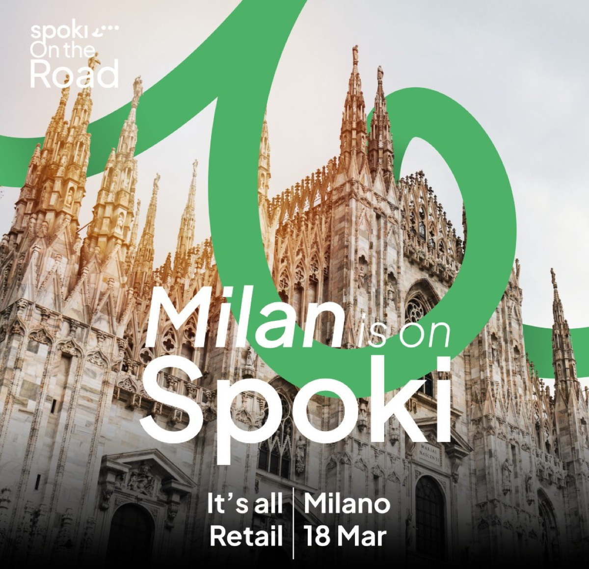